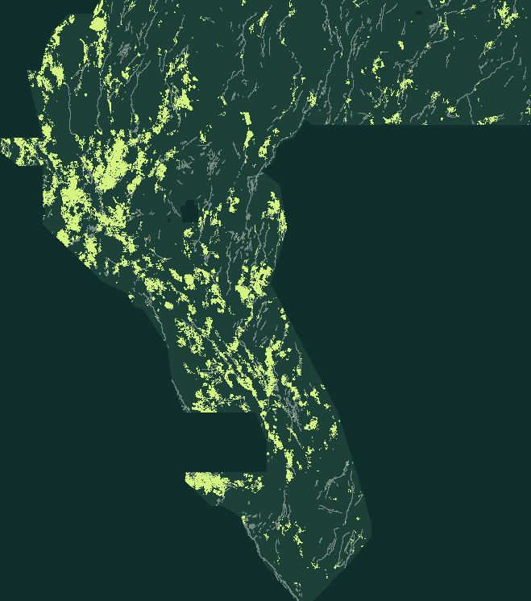

01 — HOLDOUT
Lost to H33
Paired 95% intervals versus the H33 control are entirely below zero on both seeds. The structure term beats an ablation, so the masks are not empty. They still miss the withheld faults.
Holdout table ↗GEMSDOE79 / H79-DILSTEP · EXECUTIVE SUMMARY
AUTOMATED VERDICT: NEGATIVE · DO NOT SUBMITThis session tested one idea: expert-missing faults should sit in dilatational stepovers and horsetail tips of the mapped network, not on playa shorelines. The holdout says the idea does not beat the H33 control. The duplicate gate says the dots are not new. Both stops are automatic. No slot was spent.
Single band · float32 · EPSG:32611 · 100 m · 3730 × 3292 · values exactly 0 or 1 · no NaN anywhere
Full executive summary and why a higher score is not supported ↗ · The measured numbers ↗

01 / THE DECISION
Format passes. Science and uniqueness do not. The selector was not asked to approve a slot.
Unique name, comment and SHA-256, kept for reproducibility. These are not an instruction to upload this file.
Each line is computed from the written bytes or an evidence file. A pass on one line does not cancel a fail on another.
02 / WHAT THE NUMBERS MEAN
User-reported 0.2778 and the public 0.4413 are not this file's score. This file has no organizer receipt.
Paired 95% intervals versus the H33 control are entirely below zero on both seeds. The structure term beats an ablation, so the masks are not empty. They still miss the withheld faults.
Holdout table ↗Worst forward overlap 0.853, against 0.641 expected from that prior's own halo. Rank correlation passes (worst ρ 0.641). Overlap does not.
Scan ↗The protocol forbids retuning after a score and forbids an overlap cap. A higher organizer score is possible in principle. It is not supported by this measurement, so no slot is spent.
What would be required ↗LITERAL GATE VS OPERATIVE GATE
halo coverage = 100% of allowed cells for one hash-verified witness, so every nonempty dot set has literal overlap 1.0 against it. That fact does not prove every map fails a useful duplicate test. IR-79-67 still stops this file, because 12 registry files (7 distinct maps; nan and all-finite twins counted separately) whose own halos cover at most 70% of the allowed area also contain more than 70% of these dots.